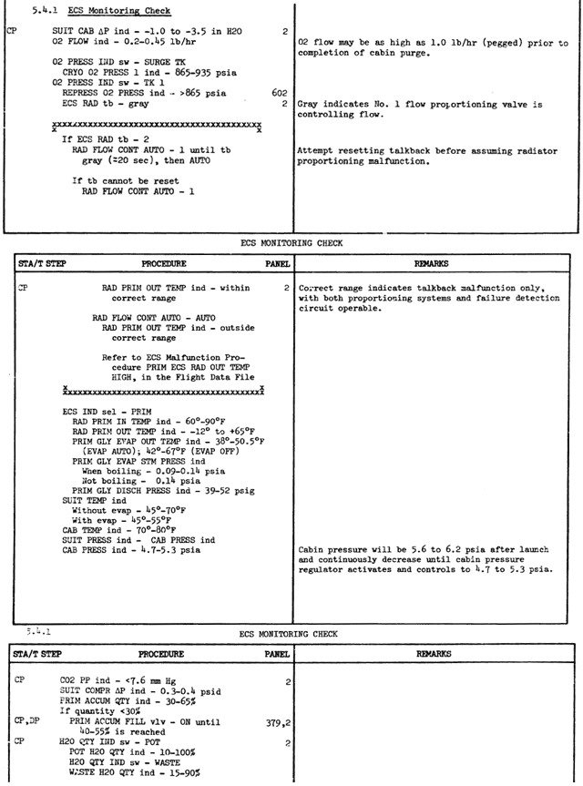
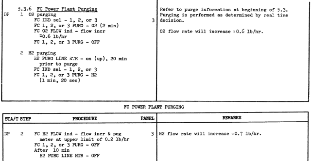

In order to make Project Apollo more realistic, some of it's mechanical, hydraulical and electrical devices, the "internal systems", are simulated. The internal systems affects the displays and controls of the panels and the behavior of the spacecrafts
themselves. In terms of the real Apollo project these systems are mainly the EPS (Electrical Power System) and ECS (Environmental Control System).
At the moment only a few system components are implemented. This is an ongoing development, so please check out this site occasionally for new features and improvements.
The internal systems in Project Apollo are simulated with a slightly modified version of Radu Poenaru's System & Panel SDK, which can be found here: http://217.10.196.198/Orbiter/main.html. But only the "system" part of the PanelSDK is used, not the panel part. The panels are still managed by the Project Apollo toggleswitch library.
The following documentation describes the systems and components as they are modelled in Project Apollo with the PanelSDK. It's no documentation of the real Apollo systems. Of course both systems are similar and should behave identical as much as possible, but of course there are some differences and simplifications.
For additional informations please also take a look at the forum topic about the internal systems here: http://www.ibiblio.org/mscorbit/phpBB2/viewtopic.php?t=132.
Command and Service Module (CSM) Systems
The following diagram shows the components of the internal systems of the Command and Service Module (CSM) as they are modelled with the PanelSDK. These components are defined in the "SaturnSystems.cfg" file in the Config\ProjectApollo folder. Please note hat the values in the diagram refer to the systems in "flight configuration", on the launch pad the suit and cabin pressure is higher, for example.

Flight Plan
In the flight plan the sequence of events related to the internal systems during an Apollo mission is shown. At the moment these events are controlled automatically so you don't have to care about it, in later versions perhaps there will be a checklist or different
"levels of realism" will be available.
But of course you can control the internal systems by yourself and so change the system state and the sequence of events. For example if you turn off the suit compressors after crew ingress, your suit compressor delta pressure reading will drop below 0 psi and you'll get more than 7.6 mmHg CO2 partial pressure in about 10 minutes, which is obviously not the normal system state.
| Misson Elapsed Time |
Event |
Remarks |
| (Initial state) |
H2 tanks 1/2 100% quantity
O2 tanks 1/2 100% quantity
Fuel cells 1/2/3 running normally
Cabin pressure 14.7 psi
Cabin temperature 70-80 °F
Suit pressure 14.9 psi
Suit temperature 45-55 °F
CO2 partial pressure 0 mmHg
Suit cabin ΔP approx. +5.5 inH2O
Suit compressors turned off
Suit compressor ΔP 0 psi
O2 flow 0 lb/hr
|
After the start of a prelaunch scenario it takes about 5 minutes until the measured values settled down.
No crew at this time. |
| -1 h 40 min |
Crew ingress (3 persons) and cabin closeout
CO2 partial pressure approx. 1 mmHg
Suit cabin ΔP > +2 inH2O
Suit compressor 1 turned on
Suit compressor ΔP 0.7 - 0.9 psi
O2 flow 0.6 - 0.8 lb/hr |
It takes about 5 minutes until the measured values settled down. |
| 0h 0 min |
Lift-off |
|
| +0h 1 min |
Cabin and suit pressure begins to decrease. |
|
| +0h 3 min |
Cabin and suit pressure approx. 10 psi. |
|
| +0h 9 min |
Cabin and suit pressure approx. 5 psi. |
|
| +0h 30 min |
CSM systems are in "flight configuration":
Cabin pressure 5 psi
Suit pressure 5 psi
CO2 partial pressure approx. 2 mmHg
Suit cabin ΔP -1.0 to -3.5 inH2O
Suit compressor ΔP 0.3 - 0.4 psi
O2 flow 0.2 to 0.45 lb/hr
|
This ECS configuration is maintained until reentry, except EVAs, of course. |
Operational Procedures
This section provides step-by-step examples and instructions how to use the internal systems. Hopefully this will help users to get a better understanding and feeling how to work with the EPS and ECS. In these procedures it is assumed that the spacecraft is in a "stable condition" without flying manoeuvers with ECS in "flight configuration", for example during Trans Lunar Coast and you can use time acceleration up to 1000 so that all of the internal systems have reasonable reaction times.
CSM ECS monitoring check
This is the part of the original Apollo documentation used for regular checking the most important ECS components. These procedures are from the Apollo-Soyuz test project Operations handbook reference issue (see below).

CSM suit compressor shutdown and restart
During normal operations suit compressor 1 is turned on in order to drive the suit atmosphere regeneration systems, which remove CO2, water and other unwanted substances. Suit compressor 2 is redundant and turned off. The following procedure demonstrates the necessity of the suit compressor.
- At the beginning the suit compressor should work normally so the SUIT COMPRESSOR 1 switch is in AC1 position (that means on) and the SUIT COMPRESSOR 2 switch is in OFF position. The SUIT COMPR ΔP meter shows 0.3 - 0.4 psi, the PART PRESS CO2 meter shows appox. 2 mmHg, which is far below the CO2 PP HI value of 7.6 mmHg, so the suit compressor is working properly.
- Switch the SUIT COMPRESSOR 1 switch to OFF (center position). The SUIT COMPR ΔP meter drops to 0 psi within a few seconds indicating that the compressors stopped working. The PART PRESS CO2 meter begins to increase.
- After about 10 minutes the PART PRESS CO2 meter shows a pressure of 7.6 mmHg or higher, the suit atmosphere gets seriously poisoned. The O2 FLOW meter shows a decreased flow because the suit circuit is no longer supplied with fresh oxygen.
- Switch the SUIT COMPRESSOR 1 switch back to AC1. The SUIT COMPR ΔP meter goes back to 0.3 - 0.4 psi, the PART PRESS CO2 meter slowly begins to decrease.
- After about 1 hour the PART PRESS CO2 meter should show approx. 2 mmHg and is normal again.
CSM cooling with the primary water-glycol coolant loop
At the moment the primary and secondary water-glycol cooling systems are only used to control the suit and cabin temperature. The suit is heated by the crew at about 10 W per crew member. In reality the cooling system also has to cool all the electrical devices like the IMU or the BMAGs and so has to remove much more heat from the CSM. But the heating of these devices is not simulated at the moment, so the cooling systems are running quite idle in the initial state, all temperatures are very low.
To test and play with the primary water-glycol coolant loop you can use the HIGH GAIN ANTENNA PITCH POSITION switch to heat the coolant loop with a boiler. Of course this is not the realistic functionality of this of switch, but that way you can watch the behavior of the cooling system during different heat loads. If the HIGH GAIN ANTENNA PITCH POSITION switch is set to +90° (up) there's no additional heating, each position adds 800 W of heating power, so in the -90° position (down) the coolant loop is heated with a heating power of 4800 W, which is about the maximum heat the primary loop can deal with.
With the following procedure you can discover the behavior of the primary water-glycol coolant loop during various heat loads:
- Set the HIGH GAIN ANTENNA PITCH POSITION switch to +90° to disable the heating, set the ECS INDICATORS switch to PRIM to make sure you're monitoring the primary loop and switch to time acceleration 10 and wait until the ECS meters are in a stable condition.
- The ECS RAD TEMP INLET meter indicates a temperature lower than 60 °F, the ECS RAD TEMP PRIM OUTLET meter shows about -10 °F maintained by the primary ECS radiators heater. The GLY EVAP TEMP OUTLET meter shows ca. 45 °F, the GLY EVAP STEAM PRESS meter is a little bit over 0.15 psi indicating that the evaporator steam pressure control valve is closed. Because the primary coolant loop has only to remove the small heat load caused by the crew the evaporator is not evaporating and the radiators have only a small amount of thermal energy to radiate, the outlet has to be heated to maintain the minimum temperature. If you switch the ECS RADIATORS HEATER PRIM switch to OFF (center) you can see the outlet temperature drop down.
- Set the HIGH GAIN ANTENNA PITCH POSITION switch to 0° to enable medium heating and wait a few minutes until the ECS meters are in a stable condition again.
- The ECS RAD TEMP INLET meter indicates now a temperature of about 80 °F, the ECS RAD TEMP PRIM OUTLET meter shows about 30°F to 40 °F. The GLY EVAP TEMP OUTLET meter shows still about 45 °F, the GLY EVAP STEAM PRESS meter is still a little bit over 0.15 psi indicating that the evaporator is still not necessary. All the thermal energy is now removed and radiated to the space by the ECS radiators, as indicated by the higher radiator outlet temperature.
- Set the HIGH GAIN ANTENNA PITCH POSITION switch to -60° to enable a huge amount of heat and wait a few minutes until the ECS meters are in a stable condition again.
- The ECS RAD TEMP INLET meter indicates now a temperature of about 90 °F, the ECS RAD TEMP PRIM OUTLET meter shows about 50 °F. Now the radiators are no longer capable removing all the thermal energy from the water-glycol coolant and the evaporator mode of cooling is initiated. The GLY EVAP TEMP OUTLET meter shows about 40 °F, the GLY EVAP STEAM PRESS meter is about 0.12 psi. That means that the steam pressure control valve is now partially open and the evaporator removes the remaining thermal energy by evaporating waste water to the space.
- Set the HIGH GAIN ANTENNA PITCH POSITION switch to -90° to enable maximum heating. Wait a few minutes and you will notice that the GLY EVAP STEAM PRESS meter is further decreasing. Wait and see if the evaporator (together with the still operating radiators) can remove all this heat from the coolant...
- Set the HIGH GAIN ANTENNA PITCH POSITION switch back to 0° to enable medium heating again. The temperatures will go back to normal readings.
CSM primary water-glycol coolant loop manual control
In the previous procedure we changed the amount of heat the primary water-glycol coolant loop had to remove, the radiators and the evaporator were controlled automatically by the ECS with respect to the amount of thermal energy they had to remove from the coolant. But you also can control both systems manually in case the automatic control fails (but this is not possible at the moment) or you want a different behavior of these systems:
- Set the HIGH GAIN ANTENNA PITCH POSITION switch to 0° to enable medium heating and wait a few minutes until the ECS is in a stable condition again.
- The radiators are sufficient to remove all the heat, the ECS RAD TEMP INLET meter indicates a temperature of about 80 °F, the ECS RAD TEMP PRIM OUTLET meter shows about 40 °F. The evaporator is not necessary, the GLY EVAP TEMP OUTLET meter shows about 45 °F, the GLY EVAP STEAM PRESS meter is again a little bit over 0.15 psi indicating that the steam pressure control valve is closed.
- Now we disable the radiators: Switch the ECS RADIATORS FLOW CONT PWR switch to MAN SEL MODE (down) and the ECS RADIATORS MAN SEL switch to OFF (center). The radiators are bypassed, the ECS RAD TEMP PRIM OUTLET meter increases to about 80 °F within a few minutes. Now the evaporator has to remove all the heat, the GLY EVAP STEAM PRESS meter indicates about 0.09 psi, GLY EVAP TEMP OUTLET meter shows about 50 °F. That means the evaporator is running at full evaporation and is hardly capable of cooling the water-glycol.
- Switch the ECS RADIATORS FLOW CONT PWR switch back to PWR and wait a few minutes until the ECS is back in the previous state.
- Now we try manual operation of the evaporator: Switch the GLYCOL EVAP STEAM PRESS AUTO MAN switch to MAN. Now you can control the steam pressure control valve manually with the GLYCOL EVAP STEAM PRESS INCR DECR switch. Switch and hold it to DECR to open the valve. The GLY EVAP TEMP OUTLET meter quickly drops below 40 °F indicating that there's more cooling than necessary. You can play with different steam pressures and monitor the GLY EVAP TEMP OUTLET meter to see the effect.
- Switch the GLYCOL EVAP STEAM PRESS AUTO MAN switch to AUTO, all ECS systems are back to automatic control.
CSM cryogenic tank and fuel cell check
During normal operations the cryo tanks and fuel cells should operate as descriped in the original Apollo documentation. The following procedures are from the Apollo-Soyuz test project Operations handbook reference issue (see below).

CSM fuel cell purging
To keep the fuel cells working properly, it's necessary to do fuel cell purging from time to time. Unlike shown in the original Apollo documentation below in Project Apollo it's not necessary to wait after switching the H2 PURGE LINE switch to HTR, but to do on H2 purging it's necessary to turn on the H2 purge line heater. The procedures are from the Apollo-Soyuz test project Operations handbook reference issue (see below).

CSM H2 cryogenic tank pressurization
During normal operations cryogenic hydrogen from the cryo tanks is consumed by the fuel cells, so for this procedure it is necessary that the fuel cells are turned on and all cryo tank heaters and fans are switched to AUTO. The cyro tank fans and heaters then maintain the pressure in the tanks.
- Switch to time acceleration 1000. Monitor the H2 PRESSURE 1/2 meters, they should slowly drop to 225 psi, then increase to 260 psi and so forth.
- Switch the H2 HEATERS 2 switch and the H2 FANS 2 switch to OFF (center position). After a couple of hours you can see that the H2 tank 1 gets still repressurized while the pressure in H2 tank 2 decreases below 200 psi. Furthermore the spacecraft consumes more hydrogen from tank 1 because of the higher pressure so the H2 QUANTITY 1 meter decreases faster than the H2 QUANTITY 2 meter.
- Switch the H2 FANS 2 switch to ON (down position). The pressure in H2 tank 2 increases continuously without stopping, so you can overpressure the tank (but it doesn't explode at the moment...). Switch the H2 FANS 2 switch back to OFF if you have enough pressure.
- Switch the H2 HEATERS 2 switch and the H2 FANS 2 switch back to AUTO (up position). Now the tanks are operated automatically again. Please notice that they now doesn't operate "synchronously" as before.
CSM fuel cell shutdown and restart
During normal operations all fuel cells are running and have a load of about 20 A at the moment. Unlike in reality we can shutdown and restart the fuel cells at any time.
- Switch to time acceleration 100. Switch the FUEL CELL INDICATOR to position 1. You can monitor a hydrogen and oxygen flow above 0 lb/hr on the FUEL CELL FLOW H2/O2 meters and a FUEL CELL MODULE SKIN TEMP of above 400 °F.
- Make sure that the FC REACS VALVES switch is in NORM position, otherwise you cannot operate the fuel cell reactants valves. Switch the FUEL CELL REACTANTS 1 switch to OFF (down position). The switch is spring-loaded and flips back to to center position. Now fuel cell 1 is down, the FUEL CELL REACTANTS 1 indicator changes to striped-line indication, both flows are 0 lb/hr, but the fuel cell skin temperature remains almost unchanged because the fuel cell temperature is still maintained by the fuel cell heaters.
- Switch the FUEL CELL HEATERS 1 switch to OFF (down position). The fuel cell skin (and condenser exhaust) temperature decreases slowly. Wait until it drops below 300 °F (use time acceleration 1000, if you are impatient...).
- Switch the FUEL CELL REACTANTS 1 switch to ON (up position). Unfortunatly the fuel cell does not start, because the skin temperature is below 300 °F.
- Switch the FUEL CELL HEATERS 1 switch to up position. The fuel cell skin temperature increases slowly. After 300 °F is reached, again switch the FUEL CELL REACTANTS 1 switch to ON (up position). The fuel cell turns on, the flows are normal again and the skin temperature increases quickly to the old value. The fuel cell is running normally again.
CSM fuel cell radiator emergency bypass
During normal operations no fuel cell emergency bypass is necessary. But if only one fuel cell is running at a load of about 20 A, you have to bypass some of the radiators so that the coolant temperature is not too low.
- Switch to time acceleration 100. Switch the FUEL CELL INDICATOR to position 1. Make sure that the FC REACS VALVES switch is in NORM position. Switch the FUEL CELL REACTANTS 2 and 3 switches to OFF (down position). The FUEL CELL REACTANTS 2 and 3 indicators change to striped-line indication.
- Wait some time (use time acceleration 1000, if you are impatient...), then the FC RAD TEMP LOW indicator changes to striped-line indicating a coolant temperature below -30°F.
- Switch the FUEL CELL RADIATORS 1 switch to EMER BYPASS (down position). The switch is spring-loaded and flips back to to center position. The FUEL CELL RADIATORS 1 indicator changes to striped-line indication. After a short time the FC RAD TEMP LOW indicator changes back to gray indicating a normal coolant temperature. You are now in "emergency mode".
- Monitor fuel cell 2 and 3 by switching the FUEL CELL INDICATOR to position 2 and 3. The flows are 0 lb/hr of course and the FC RAD TEMP LOW indicator shows striped-line indication because the radiators of the other fuel cells are not bypassed. Switch the FUEL CELL INDICATOR back to position 1.
- Switch the FUEL CELL RADIATORS 1 switch to NORMAL (up position). Switch the FUEL CELL REACTANTS 2 and 3 switches to ON (up position). You are now back in "normal mode". The FC RAD TEMP LOW indicator should show gray indication again.
References
The following documents are used to gather most of the informations needed for the internal systems:
Back